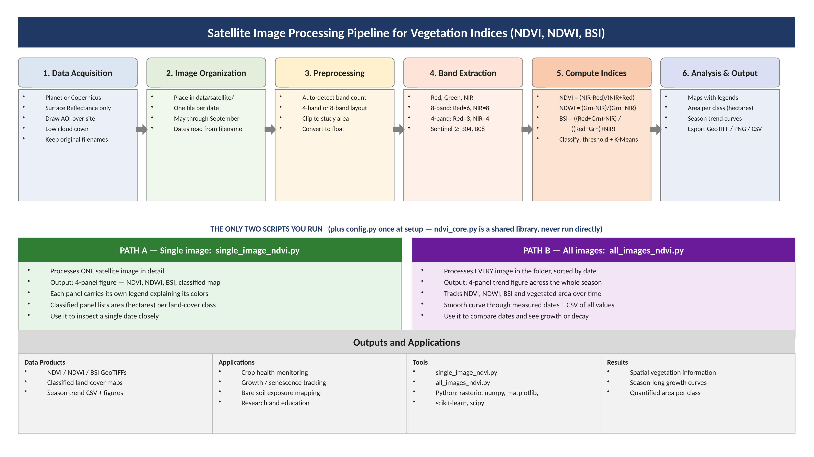
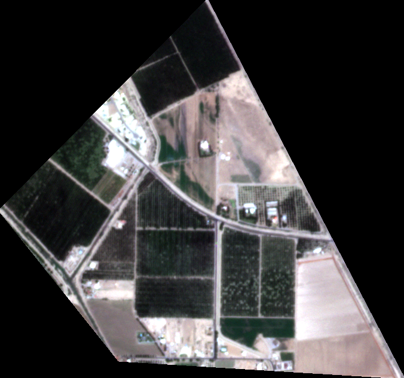
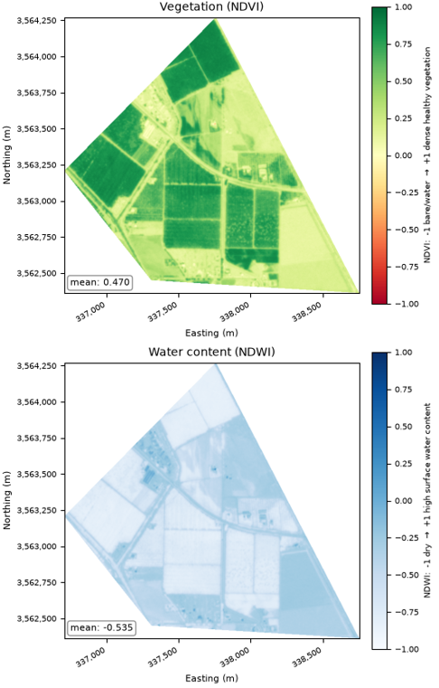
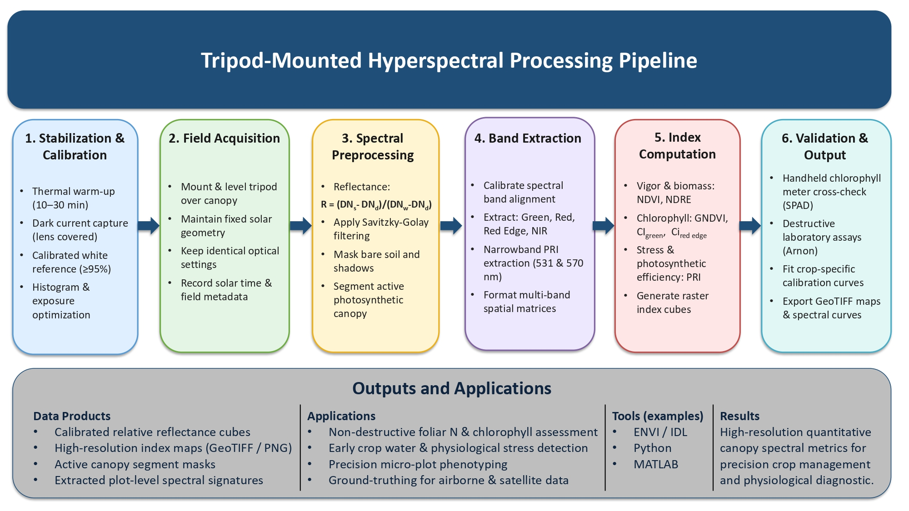

Satellite Remote Sensing
Satellite imagery is used to provide low spatial resolution observations of the study area. The imagery is processed to generate vegetation indices such as the Normalize Vegetation Index (NDVI) and Normalized Difference Water Index (NDWI). These indices is useful for identifying and evaluating green vegetation using standard multispectra imagery.

Satellite Image Processing Results
The original imagery was processed to calculate the VIs. The VI images enhance green vegetation and water content and facilitates comparison of vegetation conditions within a regional study area.


Fig. 2. Comparison of (a) the original Satellite RGB image and (b) NDVI and NDWI image of the area taken on July 9th, 2026. Image processing was performed using Python.
UAV Remote Sensing
UAV RGB imagery is used to provide high spatial resolution observations of the study area. The imagery is processed to generate vegetation indices such as the Excess Green Index (ExG). ExG is useful for identifying and evaluating green vegetation using standard RGB imagery.

UAV Image Processing Results
The original RGB imagery was processed to calculate the Excess Green Index (ExG). The ExG image enhances green vegetation and facilitates comparison of vegetation conditions within the study area.


Fig. 2. Comparison of (a) the original UAV RGB image and (b) Excess Green Index (ExG) images taken on July 9th, 2026. Due to camera mounting configuration, the RGB image was taken at an off-nadir angle. Image processing was performed using ENVI® 5.6.
Ground-based Remote Sensing
Hyperspectral imagery is acquired to obtain very detailed full spectral information about vegetaion, soil, and other meterials within a very small area. A hyperspectral sensor measures reflected energy in many narrow continuous wavelneght bands. These measurements provide data for calculating several vegetation indices, including the NDVI, and can be used to investigate plant vigor and biomass at the individual plant level.

Hyperspectral Image Processing Results
The hyperspectral imagery was processed to calculate the reflectance and can be used to calculate several VIs, including Normalized Difference Vegetation Index (NDVI),Normalized Difference Red Edge Index (NDRE) and Photochemical Reflectance Index (PRI)


Fig. 2. Comparison of (a) the original hyperspectral RGB image and (b) NDVI and PRI images taken on July 9th, 2026. Image processing was performed using ENVI® 5.6.